CoordinateSystem#
Qualified name: manim.mobject.graphing.coordinate\_systems.CoordinateSystem
- class CoordinateSystem(x_range=None, y_range=None, x_length=None, y_length=None, dimension=2)[源代码]#
基类：
objectAbstract class for Axes and NumberPlane
实际案例
Example: CoordSysExample ¶
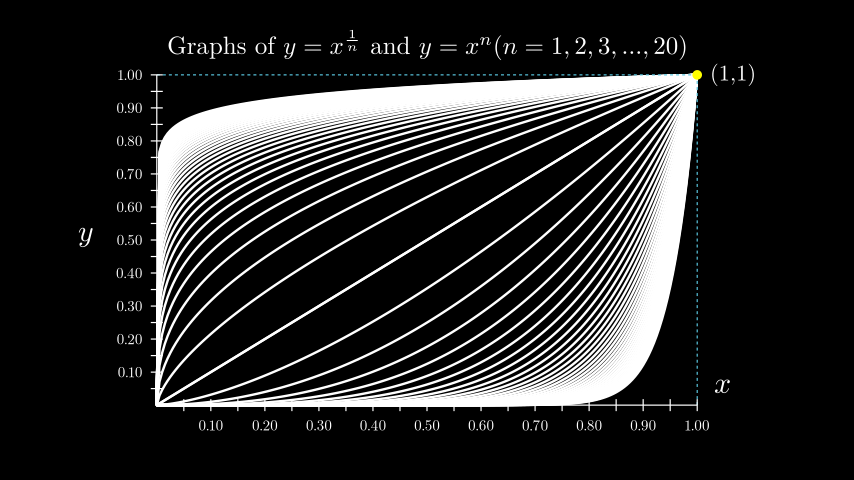from manim import * class CoordSysExample(Scene): def construct(self): # the location of the ticks depends on the x_range and y_range. grid = Axes( x_range=[0, 1, 0.05], # step size determines num_decimal_places. y_range=[0, 1, 0.05], x_length=9, y_length=5.5, axis_config={ "numbers_to_include": np.arange(0, 1 + 0.1, 0.1), "font_size": 24, }, tips=False, ) # Labels for the x-axis and y-axis. y_label = grid.get_y_axis_label("y", edge=LEFT, direction=LEFT, buff=0.4) x_label = grid.get_x_axis_label("x") grid_labels = VGroup(x_label, y_label) graphs = VGroup() for n in np.arange(1, 20 + 0.5, 0.5): graphs += grid.plot(lambda x: x ** n, color=WHITE) graphs += grid.plot( lambda x: x ** (1 / n), color=WHITE, use_smoothing=False ) # Extra lines and labels for point (1,1) graphs += grid.get_horizontal_line(grid.c2p(1, 1, 0), color=BLUE) graphs += grid.get_vertical_line(grid.c2p(1, 1, 0), color=BLUE) graphs += Dot(point=grid.c2p(1, 1, 0), color=YELLOW) graphs += Tex("(1,1)").scale(0.75).next_to(grid.c2p(1, 1, 0)) title = Title( # spaces between braces to prevent SyntaxError r"Graphs of $y=x^{ {1}\over{n} }$ and $y=x^n (n=1,2,3,...,20)$", include_underline=False, font_size=40, ) self.add(title, graphs, grid, grid_labels)
Methods
Adds labels to the axes.
Returns the angle to the x-axis of the tangent to the plotted curve at a particular x-value.
Abbreviation for coords_to_point
coords_to_pointCreates a labelled triangle marker with a vertical line from the x-axis to a curve at a given x-value.
Returns a
Polygonrepresenting the area under the graph passed.get_axesget_axisDefines labels for the x_axis and y_axis of the graph.
Creates a properly positioned label for the passed graph, with an optional dot.
A horizontal line from the y-axis to a given point in the scene.
Returns a straight line from a given axis to a point in the scene.
Generate both horizontal and vertical lines from the axis to a point.
Gets the origin of
Axes.Generates a
VGroupof the Riemann Rectangles for a given curve.Creates two lines representing dx and df, the labels for dx and df, and
A vertical line from the x-axis to a given point in the scene.
Obtains multiple lines from the x-axis to the curve.
get_x_axisGenerate an x-axis label.
get_x_unit_sizeget_y_axisGenerate a y-axis label.
get_y_unit_sizeget_z_axisAlias for
input_to_graph_coords().Alias for
input_to_graph_point().Returns a tuple of the axis relative coordinates of the point on the graph based on the x-value given.
Returns the coordinates of the point on a
graphcorresponding to anxvalue.Abbreviation for point_to_coords
Generates a curve based on a function.
Plots an antiderivative graph.
Returns the curve of the derivative of the passed graph.
Creates the curves of an implicit function.
plot_parametric_curveA polar graph.
point_to_coordsGets polar coordinates from a point.
Gets a point from polar coordinates.
Abbreviation for
polar_to_point()Abbreviation for
point_to_polar()Returns the slope of the tangent to the plotted curve at a particular x-value.
- add_coordinates(*axes_numbers, **kwargs)[源代码]#
Adds labels to the axes. Use
Axes.coordinate_labelsto access the coordinates after creation.- 参数
axes_numbers (Iterable[float] | None | dict[float, str | float | Mobject]) – The numbers to be added to the axes. Use
Noneto represent an axis with default labels.
实际案例
ax = ThreeDAxes() x_labels = range(-4, 5) z_labels = range(-4, 4, 2) ax.add_coordinates(x_labels, None, z_labels) # default y labels, custom x & z labels ax.add_coordinates(x_labels) # only x labels
You can also specifically control the position and value of the labels using a dict.
ax = Axes(x_range=[0, 7]) x_pos = [x for x in range(1, 8)] # strings are automatically converted into a `Tex` mobject. x_vals = ["Monday", "Tuesday", "Wednesday", "Thursday", "Friday", "Saturday", "Sunday"] x_dict = dict(zip(x_pos, x_vals)) ax.add_coordinates(x_dict)
- angle_of_tangent(x, graph, dx=1e-08)[源代码]#
Returns the angle to the x-axis of the tangent to the plotted curve at a particular x-value.
- 参数
x (float) – The x-value at which the tangent must touch the curve.
graph (manim.mobject.graphing.functions.ParametricFunction) – The
ParametricFunctionfor which to calculate the tangent.dx (float) – The change in x used to determine the angle of the tangent to the curve.
- 返回
The angle of the tangent to the curve.
- 返回类型
float
实际案例
ax = Axes() curve = ax.plot(lambda x: x ** 2) ax.angle_of_tangent(x=3, graph=curve) # 1.4056476493802699
- get_T_label(x_val, graph, label=None, label_color=None, triangle_size=0.25, triangle_color='#FFFFFF', line_func=<class 'manim.mobject.geometry.line.Line'>, line_color='#FFFF00')[源代码]#
Creates a labelled triangle marker with a vertical line from the x-axis to a curve at a given x-value.
- 参数
x_val (float) – The position along the curve at which the label, line and triangle will be constructed.
graph (ParametricFunction) – The
ParametricFunctionfor which to construct the label.label (float | str | Mobject | None) – The label of the vertical line and triangle.
label_color (Color | None) – The color of the label.
triangle_size (float) – The size of the triangle.
triangle_color (Color | None) – The color of the triangle.
line_func (Line) – The function used to construct the vertical line.
line_color (Color) – The color of the vertical line.
- 返回
A
VGroupof the label, triangle and vertical line mobjects.- 返回类型
实际案例
Example: T_labelExample ¶
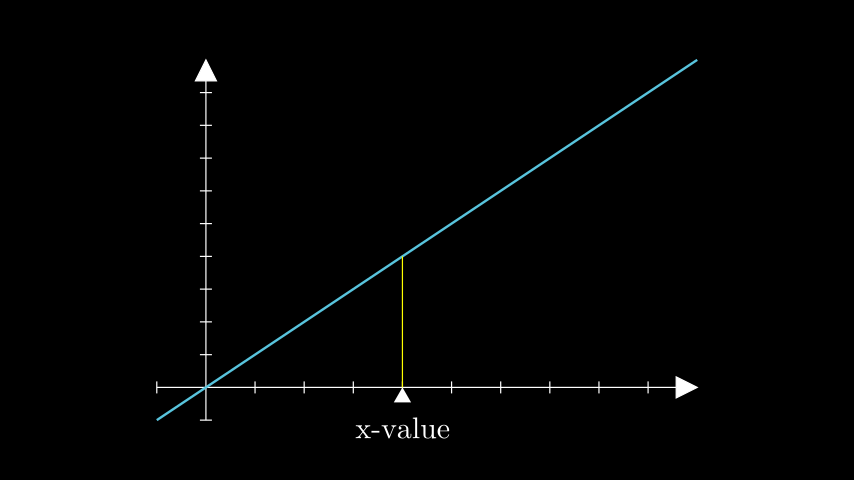from manim import * class T_labelExample(Scene): def construct(self): # defines the axes and linear function axes = Axes(x_range=[-1, 10], y_range=[-1, 10], x_length=9, y_length=6) func = axes.plot(lambda x: x, color=BLUE) # creates the T_label t_label = axes.get_T_label(x_val=4, graph=func, label=Tex("x-value")) self.add(axes, func, t_label)
- get_area(graph, x_range=None, color=['#58C4DD', '#83C167'], opacity=0.3, bounded_graph=None, **kwargs)[源代码]#
Returns a
Polygonrepresenting the area under the graph passed.- 参数
graph (ParametricFunction) – The graph/curve for which the area needs to be gotten.
x_range (tuple[float, float] | None) – The range of the minimum and maximum x-values of the area.
x_range = [x_min, x_max].color (Color | Iterable[Color]) – The color of the area. Creates a gradient if a list of colors is provided.
opacity (float) – The opacity of the area.
bounded_graph (ParametricFunction) – If a secondary
graphis specified, encloses the area between the two curves.kwargs – Additional parameters passed to
Polygon.
- 返回
The
Polygonrepresenting the area.- 返回类型
- 引发
ValueError – When x_ranges do not match (either area x_range, graph’s x_range or bounded_graph’s x_range).
实际案例
Example: GetAreaExample ¶
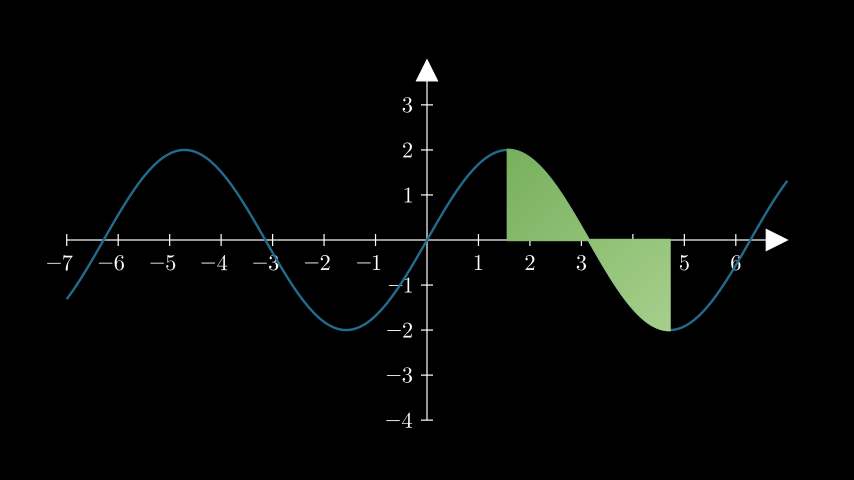from manim import * class GetAreaExample(Scene): def construct(self): ax = Axes().add_coordinates() curve = ax.plot(lambda x: 2 * np.sin(x), color=DARK_BLUE) area = ax.get_area( curve, x_range=(PI / 2, 3 * PI / 2), color=(GREEN_B, GREEN_D), opacity=1, ) self.add(ax, curve, area)
- get_axis_labels(x_label='x', y_label='y')[源代码]#
Defines labels for the x_axis and y_axis of the graph. For increased control over the position of the labels, use
get_x_axis_label()andget_y_axis_label().- 参数
- 返回
A
Vgroupof the labels for the x_axis and y_axis.- 返回类型
实际案例
Example: GetAxisLabelsExample ¶
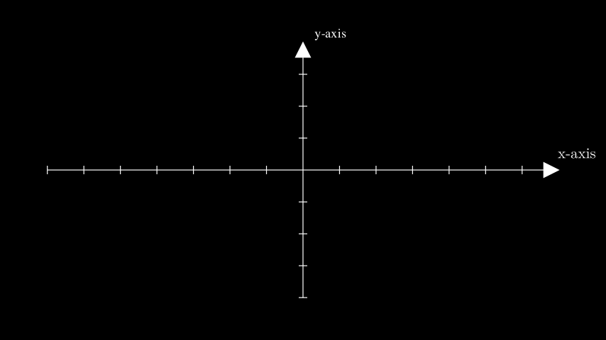from manim import * class GetAxisLabelsExample(Scene): def construct(self): ax = Axes() labels = ax.get_axis_labels( Tex("x-axis").scale(0.7), Text("y-axis").scale(0.45) ) self.add(ax, labels)
- get_graph_label(graph, label='f(x)', x_val=None, direction=array([1., 0., 0.]), buff=0.25, color=None, dot=False, dot_config=None)[源代码]#
Creates a properly positioned label for the passed graph, with an optional dot.
- 参数
graph (ParametricFunction) – The curve.
label (float | str | Mobject) – The label for the function’s curve. Defaults to
MathTexforstrandfloatinputs.x_val (float | None) – The x_value along the curve that positions the label.
direction (Sequence[float]) – The cartesian position, relative to the curve that the label will be at –>
LEFT,RIGHT.buff (float) – The distance between the curve and the label.
color (Color | None) – The color of the label. Defaults to the color of the curve.
dot (bool) – Whether to add a dot at the point on the graph.
dot_config (dict | None) – Additional parameters to be passed to
Dot.
- 返回
The positioned label and
Dot, if applicable.- 返回类型
Mobject
实际案例
Example: GetGraphLabelExample ¶
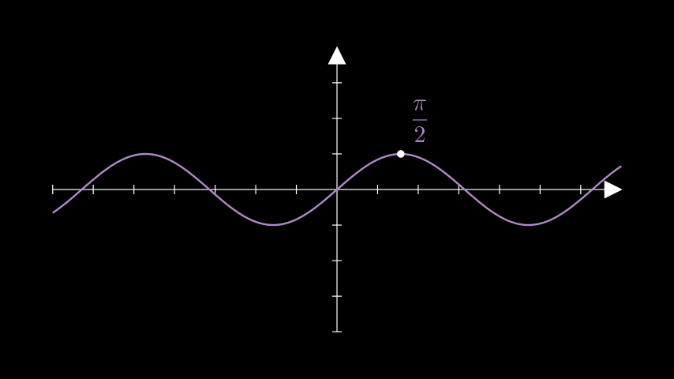from manim import * class GetGraphLabelExample(Scene): def construct(self): ax = Axes() sin = ax.plot(lambda x: np.sin(x), color=PURPLE_B) label = ax.get_graph_label( graph=sin, label= MathTex(r"\frac{\pi}{2}"), x_val=PI / 2, dot=True, direction=UR, ) self.add(ax, sin, label)
- get_horizontal_line(point, **kwargs)[源代码]#
A horizontal line from the y-axis to a given point in the scene.
- 参数
point (Sequence[float]) – The point to which the horizontal line will be drawn.
kwargs – Additional parameters to be passed to
get_line_from_axis_to_point.
- 返回
A horizontal line from the y-axis to the point.
- 返回类型
Line
实际案例
Example: GetHorizontalLineExample ¶
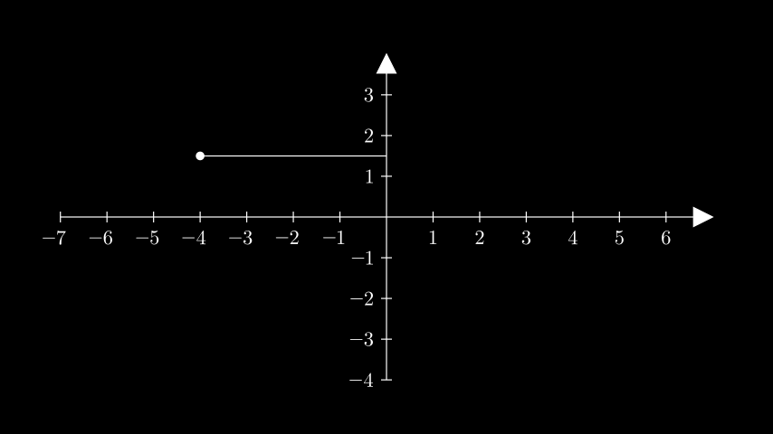from manim import * class GetHorizontalLineExample(Scene): def construct(self): ax = Axes().add_coordinates() point = ax.c2p(-4, 1.5) dot = Dot(point) line = ax.get_horizontal_line(point, line_func=Line) self.add(ax, line, dot)
- get_line_from_axis_to_point(index, point, line_func=<class 'manim.mobject.geometry.line.DashedLine'>, line_config=None, color=None, stroke_width=2)[源代码]#
Returns a straight line from a given axis to a point in the scene.
- 参数
index (int) – Specifies the axis from which to draw the line. 0 = x_axis, 1 = y_axis
point (Sequence[float]) – The point to which the line will be drawn.
line_func (Line) – The function of the
Linemobject used to construct the line.line_config (dict | None) – Optional arguments to passed to
line_func.color (Color | None) – The color of the line.
stroke_width (float) – The stroke width of the line.
- 返回
The line from an axis to a point.
- 返回类型
- get_lines_to_point(point, **kwargs)[源代码]#
Generate both horizontal and vertical lines from the axis to a point.
- 参数
point (Sequence[float]) – A point on the scene.
kwargs – Additional parameters to be passed to
get_line_from_axis_to_point()
- 返回
A
VGroupof the horizontal and vertical lines.- 返回类型
实际案例
Example: GetLinesToPointExample ¶
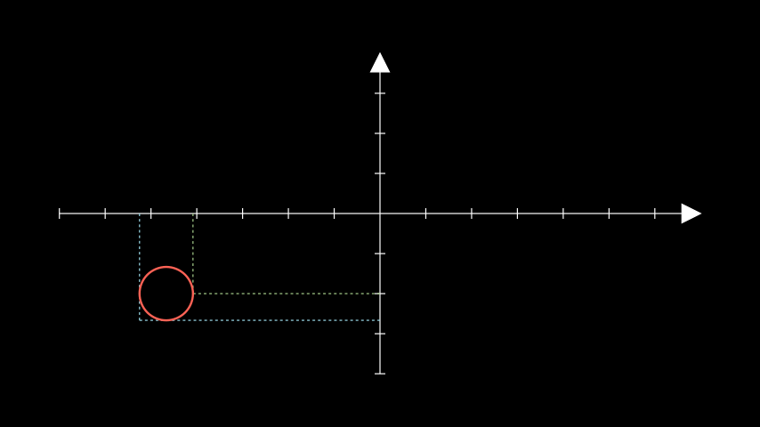from manim import * class GetLinesToPointExample(Scene): def construct(self): ax = Axes() circ = Circle(radius=0.5).move_to([-4, -1.5, 0]) lines_1 = ax.get_lines_to_point(circ.get_right(), color=GREEN_B) lines_2 = ax.get_lines_to_point(circ.get_corner(DL), color=BLUE_B) self.add(ax, lines_1, lines_2, circ)
- get_riemann_rectangles(graph, x_range=None, dx=0.1, input_sample_type='left', stroke_width=1, stroke_color='#000000', fill_opacity=1, color=array(['#58C4DD', '#83C167'], dtype='<U7'), show_signed_area=True, bounded_graph=None, blend=False, width_scale_factor=1.001)[源代码]#
Generates a
VGroupof the Riemann Rectangles for a given curve.- 参数
graph (ParametricFunction) – The graph whose area will be approximated by Riemann rectangles.
x_range (Sequence[float] | None) – The minimum and maximum x-values of the rectangles.
x_range = [x_min, x_max].dx (float | None) – The change in x-value that separates each rectangle.
input_sample_type (str) – Can be any of
"left","right"or"center". Refers to where the sample point for the height of each Riemann Rectangle will be inside the segments of the partition.stroke_width (float) – The stroke_width of the border of the rectangles.
stroke_color (Color) – The color of the border of the rectangle.
fill_opacity (float) – The opacity of the rectangles.
color (Iterable[Color] | Color) – The colors of the rectangles. Creates a balanced gradient if multiple colors are passed.
show_signed_area (bool) – Indicates negative area when the curve dips below the x-axis by inverting its color.
blend (bool) – Sets the
stroke_colortofill_color, blending the rectangles without clear separation.bounded_graph (ParametricFunction) – If a secondary graph is specified, encloses the area between the two curves.
width_scale_factor (float) – The factor by which the width of the rectangles is scaled.
- 返回
A
VGroupcontaining the Riemann Rectangles.- 返回类型
实际案例
Example: GetRiemannRectanglesExample ¶
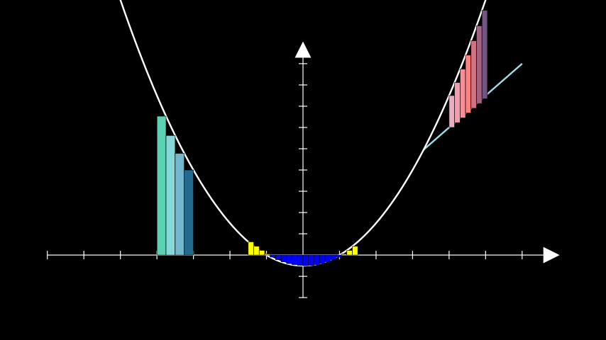from manim import * class GetRiemannRectanglesExample(Scene): def construct(self): ax = Axes(y_range=[-2, 10]) quadratic = ax.plot(lambda x: 0.5 * x ** 2 - 0.5) # the rectangles are constructed from their top right corner. # passing an iterable to `color` produces a gradient rects_right = ax.get_riemann_rectangles( quadratic, x_range=[-4, -3], dx=0.25, color=(TEAL, BLUE_B, DARK_BLUE), input_sample_type="right", ) # the colour of rectangles below the x-axis is inverted # due to show_signed_area rects_left = ax.get_riemann_rectangles( quadratic, x_range=[-1.5, 1.5], dx=0.15, color=YELLOW ) bounding_line = ax.plot( lambda x: 1.5 * x, color=BLUE_B, x_range=[3.3, 6] ) bounded_rects = ax.get_riemann_rectangles( bounding_line, bounded_graph=quadratic, dx=0.15, x_range=[4, 5], show_signed_area=False, color=(MAROON_A, RED_B, PURPLE_D), ) self.add( ax, bounding_line, quadratic, rects_right, rects_left, bounded_rects )
- get_secant_slope_group(x, graph, dx=None, dx_line_color='#FFFF00', dy_line_color=None, dx_label=None, dy_label=None, include_secant_line=True, secant_line_color='#83C167', secant_line_length=10)[源代码]#
- Creates two lines representing dx and df, the labels for dx and df, and
the secant to the curve at a particular x-value.
- 参数
x (float) – The x-value at which the secant intersects the graph for the first time.
graph (ParametricFunction) – The curve for which the secant will be found.
dx (float | None) – The change in x after which the secant exits.
dx_line_color (Color) – The color of the line that indicates the change in x.
dy_line_color (Color | None) – The color of the line that indicates the change in y. Defaults to the color of
graph.dx_label (float | str | None) – The label for the dx line. Defaults to
MathTexforstrandfloatinputs.dy_label (float | str | None) – The label for the dy line. Defaults to
MathTexforstrandfloatinputs.include_secant_line (bool) – Whether to include the secant line in the graph, or just the df/dx lines and labels.
secant_line_color (Color) – The color of the secant line.
secant_line_length (float) – The length of the secant line.
- 返回
A group containing the elements: dx_line, df_line, and if applicable also
dx_label,df_label, secant_line.- 返回类型
实际案例
Example: GetSecantSlopeGroupExample ¶
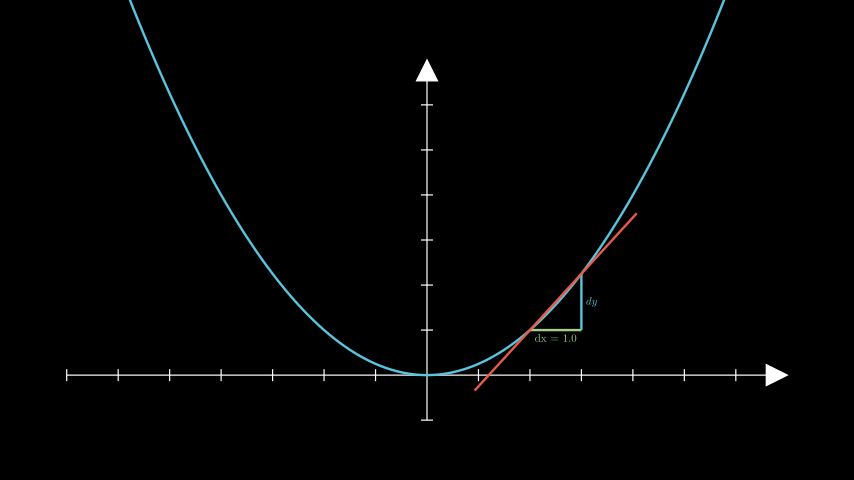from manim import * class GetSecantSlopeGroupExample(Scene): def construct(self): ax = Axes(y_range=[-1, 7]) graph = ax.plot(lambda x: 1 / 4 * x ** 2, color=BLUE) slopes = ax.get_secant_slope_group( x=2.0, graph=graph, dx=1.0, dx_label=Tex("dx = 1.0"), dy_label="dy", dx_line_color=GREEN_B, secant_line_length=4, secant_line_color=RED_D, ) self.add(ax, graph, slopes)
- get_vertical_line(point, **kwargs)[源代码]#
A vertical line from the x-axis to a given point in the scene.
- 参数
point (Sequence[float]) – The point to which the vertical line will be drawn.
kwargs – Additional parameters to be passed to
get_line_from_axis_to_point.
- 返回
A vertical line from the x-axis to the point.
- 返回类型
Line
实际案例
Example: GetVerticalLineExample ¶
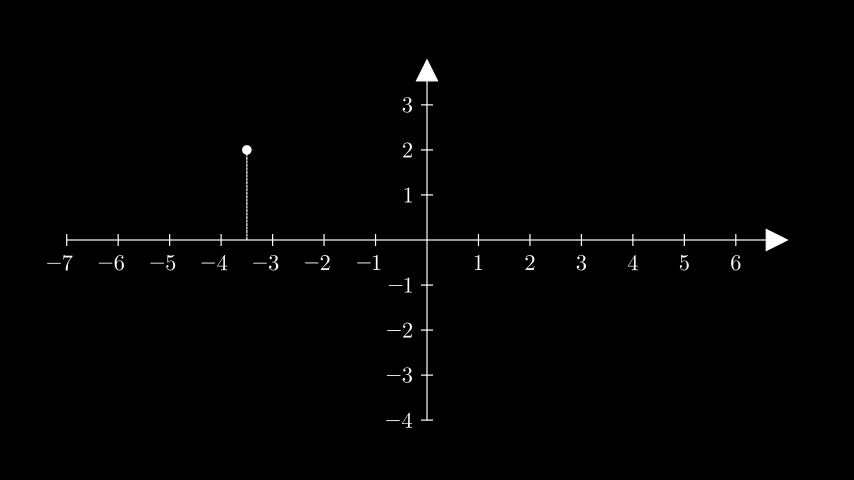from manim import * class GetVerticalLineExample(Scene): def construct(self): ax = Axes().add_coordinates() point = ax.coords_to_point(-3.5, 2) dot = Dot(point) line = ax.get_vertical_line(point, line_config={"dashed_ratio": 0.85}) self.add(ax, line, dot)
- get_vertical_lines_to_graph(graph, x_range=None, num_lines=20, **kwargs)[源代码]#
Obtains multiple lines from the x-axis to the curve.
- 参数
graph (ParametricFunction) – The graph along which the lines are placed.
x_range (Sequence[float] | None) – A list containing the lower and and upper bounds of the lines:
x_range = [x_min, x_max].num_lines (int) – The number of evenly spaced lines.
kwargs – Additional arguments to be passed to
get_vertical_line().
- 返回
The
VGroupof the evenly spaced lines.- 返回类型
实际案例
Example: GetVerticalLinesToGraph ¶
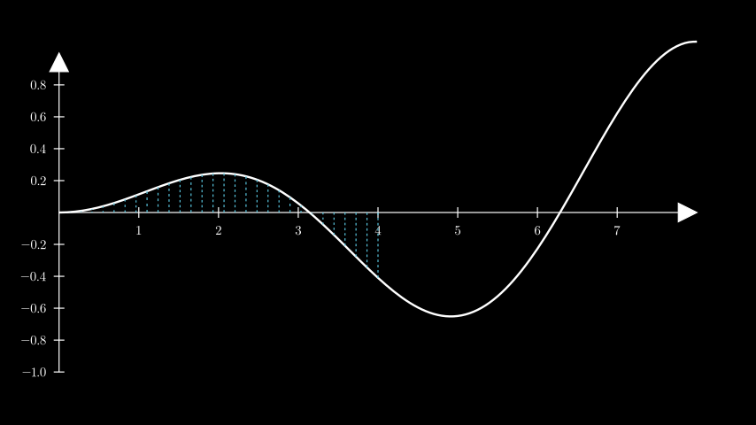from manim import * class GetVerticalLinesToGraph(Scene): def construct(self): ax = Axes( x_range=[0, 8.0, 1], y_range=[-1, 1, 0.2], axis_config={"font_size": 24}, ).add_coordinates() curve = ax.plot(lambda x: np.sin(x) / np.e ** 2 * x) lines = ax.get_vertical_lines_to_graph( curve, x_range=[0, 4], num_lines=30, color=BLUE ) self.add(ax, curve, lines)
- get_x_axis_label(label, edge=array([1., 1., 0.]), direction=array([1., 1., 0.]), buff=0.1, **kwargs)[源代码]#
Generate an x-axis label.
- 参数
label (float | str | Mobject) – The label. Defaults to
MathTexforstrandfloatinputs.edge (Sequence[float]) – The edge of the x-axis to which the label will be added, by default
UR.direction (Sequence[float]) – Allows for further positioning of the label from an edge, by default
UR.buff (float) – The distance of the label from the line.
- 返回
The positioned label.
- 返回类型
实际案例
Example: GetXAxisLabelExample ¶
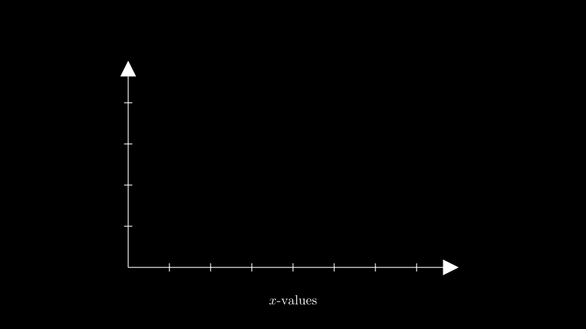from manim import * class GetXAxisLabelExample(Scene): def construct(self): ax = Axes(x_range=(0, 8), y_range=(0, 5), x_length=8, y_length=5) x_label = ax.get_x_axis_label( Tex("$x$-values").scale(0.65), edge=DOWN, direction=DOWN, buff=0.5 ) self.add(ax, x_label)
- get_y_axis_label(label, edge=array([1., 1., 0.]), direction=array([1., 0.5, 0.]), buff=0.1, **kwargs)[源代码]#
Generate a y-axis label.
- 参数
label (float | str | Mobject) – The label. Defaults to
MathTexforstrandfloatinputs.edge (Sequence[float]) – The edge of the x-axis to which the label will be added, by default
UR.direction (Sequence[float]) – Allows for further positioning of the label from an edge, by default
URbuff (float) – The distance of the label from the line.
- 返回
The positioned label.
- 返回类型
实际案例
Example: GetYAxisLabelExample ¶
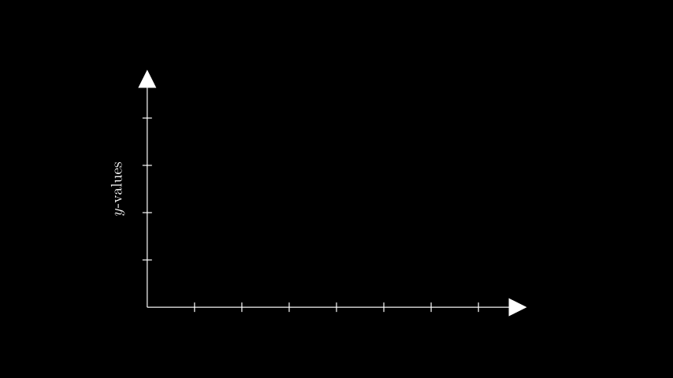from manim import * class GetYAxisLabelExample(Scene): def construct(self): ax = Axes(x_range=(0, 8), y_range=(0, 5), x_length=8, y_length=5) y_label = ax.get_y_axis_label( Tex("$y$-values").scale(0.65).rotate(90 * DEGREES), edge=LEFT, direction=LEFT, buff=0.3, ) self.add(ax, y_label)
- i2gc(x, graph)[源代码]#
Alias for
input_to_graph_coords().- 参数
x (float) –
graph (manim.mobject.graphing.functions.ParametricFunction) –
- 返回类型
tuple
- i2gp(x, graph)[源代码]#
Alias for
input_to_graph_point().- 参数
x (float) –
graph (manim.mobject.graphing.functions.ParametricFunction) –
- 返回类型
numpy.ndarray
- input_to_graph_coords(x, graph)[源代码]#
Returns a tuple of the axis relative coordinates of the point on the graph based on the x-value given.
实际案例
>>> from manim import Axes >>> ax = Axes() >>> parabola = ax.plot(lambda x: x ** 2) >>> ax.input_to_graph_coords(x=3, graph=parabola) (3, 9)
- 参数
x (float) –
graph (manim.mobject.graphing.functions.ParametricFunction) –
- 返回类型
tuple
- input_to_graph_point(x, graph)[源代码]#
Returns the coordinates of the point on a
graphcorresponding to anxvalue.- 参数
x (float) – The x-value of a point on the
graph.graph (ParametricFunction | VMobject) – The
ParametricFunctionon which the point lies.
- 返回
The coordinates of the point on the
graphcorresponding to thexvalue.- 返回类型
np.ndarray- 引发
ValueError – When the target x is not in the range of the line graph.
实际案例
Example: InputToGraphPointExample ¶
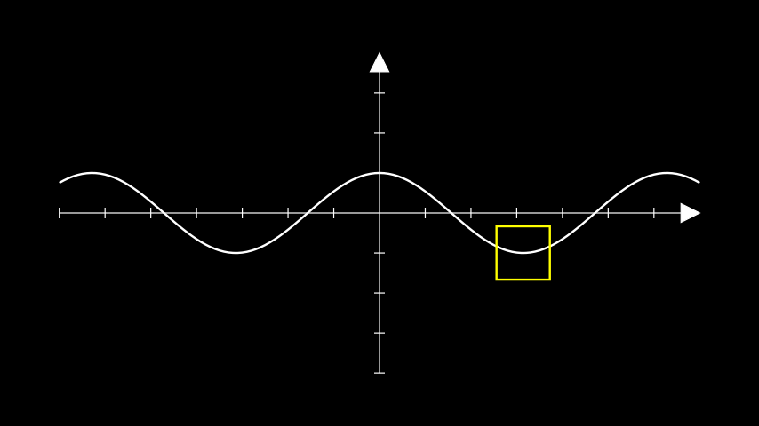from manim import * class InputToGraphPointExample(Scene): def construct(self): ax = Axes() curve = ax.plot(lambda x : np.cos(x)) # move a square to PI on the cosine curve. position = ax.input_to_graph_point(x=PI, graph=curve) sq = Square(side_length=1, color=YELLOW).move_to(position) self.add(ax, curve, sq)
- plot(function, x_range=None, **kwargs)[源代码]#
Generates a curve based on a function.
- 参数
function (Callable[[float], float]) – The function used to construct the
ParametricFunction.x_range (Sequence[float] | None) – The range of the curve along the axes.
x_range = [x_min, x_max, x_step].kwargs – Additional parameters to be passed to
ParametricFunction.
- 返回
The plotted curve.
- 返回类型
警告
This method may not produce accurate graphs since Manim currently relies on interpolation between evenly-spaced samples of the curve, instead of intelligent plotting. See the example below for some solutions to this problem.
实际案例
Example: PlotExample ¶
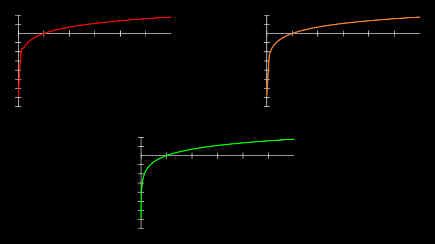from manim import * class PlotExample(Scene): def construct(self): # construct the axes ax_1 = Axes( x_range=[0.001, 6], y_range=[-8, 2], x_length=5, y_length=3, tips=False, ) ax_2 = ax_1.copy() ax_3 = ax_1.copy() # position the axes ax_1.to_corner(UL) ax_2.to_corner(UR) ax_3.to_edge(DOWN) axes = VGroup(ax_1, ax_2, ax_3) # create the logarithmic curves def log_func(x): return np.log(x) # a curve without adjustments; poor interpolation. curve_1 = ax_1.plot(log_func, color=PURE_RED) # disabling interpolation makes the graph look choppy as not enough # inputs are available curve_2 = ax_2.plot(log_func, use_smoothing=False, color=ORANGE) # taking more inputs of the curve by specifying a step for the # x_range yields expected results, but increases rendering time. curve_3 = ax_3.plot( log_func, x_range=(0.001, 6, 0.001), color=PURE_GREEN ) curves = VGroup(curve_1, curve_2, curve_3) self.add(axes, curves)
- plot_antiderivative_graph(graph, y_intercept=0, samples=50, **kwargs)[源代码]#
Plots an antiderivative graph.
- 参数
graph (manim.mobject.graphing.functions.ParametricFunction) – The graph for which the antiderivative will be found.
y_intercept (float) – The y-value at which the graph intercepts the y-axis.
samples (int) – The number of points to take the area under the graph.
kwargs – Any valid keyword argument of
ParametricFunction.
- 返回
The curve of the antiderivative.
- 返回类型
注解
This graph is plotted from the values of area under the reference graph. The result might not be ideal if the reference graph contains uncalculatable areas from x=0.
实际案例
Example: AntiderivativeExample ¶
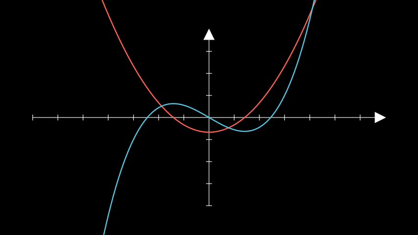from manim import * class AntiderivativeExample(Scene): def construct(self): ax = Axes() graph1 = ax.plot( lambda x: (x ** 2 - 2) / 3, color=RED, ) graph2 = ax.plot_antiderivative_graph(graph1, color=BLUE) self.add(ax, graph1, graph2)
- plot_derivative_graph(graph, color='#83C167', **kwargs)[源代码]#
Returns the curve of the derivative of the passed graph.
- 参数
graph (manim.mobject.graphing.functions.ParametricFunction) – The graph for which the derivative will be found.
color (colour.Color) – The color of the derivative curve.
kwargs – Any valid keyword argument of
ParametricFunction.
- 返回
The curve of the derivative.
- 返回类型
实际案例
Example: DerivativeGraphExample ¶
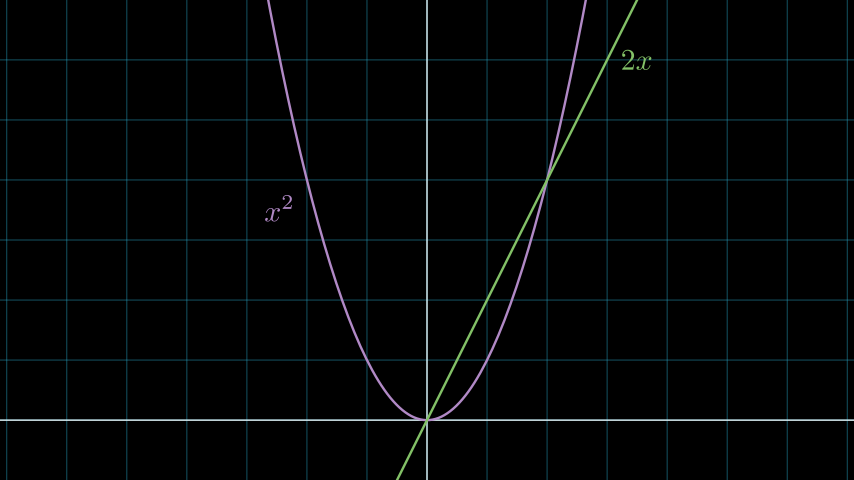from manim import * class DerivativeGraphExample(Scene): def construct(self): ax = NumberPlane(y_range=[-1, 7], background_line_style={"stroke_opacity": 0.4}) curve_1 = ax.plot(lambda x: x ** 2, color=PURPLE_B) curve_2 = ax.plot_derivative_graph(curve_1) curves = VGroup(curve_1, curve_2) label_1 = ax.get_graph_label(curve_1, "x^2", x_val=-2, direction=DL) label_2 = ax.get_graph_label(curve_2, "2x", x_val=3, direction=RIGHT) labels = VGroup(label_1, label_2) self.add(ax, curves, labels)
- plot_implicit_curve(func, min_depth=5, max_quads=1500, **kwargs)[源代码]#
Creates the curves of an implicit function.
- 参数
func (Callable) – The function to graph, in the form of f(x, y) = 0.
min_depth (int) – The minimum depth of the function to calculate.
max_quads (int) – The maximum number of quads to use.
kwargs – Additional parameters to pass into
ImplicitFunction.
- 返回类型
实际案例
Example: ImplicitExample ¶
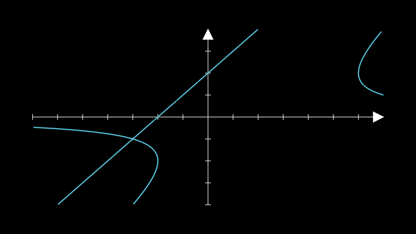from manim import * class ImplicitExample(Scene): def construct(self): ax = Axes() a = ax.plot_implicit_curve( lambda x, y: y * (x - y) ** 2 - 4 * x - 8, color=BLUE ) self.add(ax, a)
- plot_polar_graph(r_func, theta_range=[0, 6.283185307179586], **kwargs)[源代码]#
A polar graph.
- 参数
r_func (Callable[[float], float]) – The function r of theta.
theta_range (Sequence[float]) – The range of theta as
theta_range = [theta_min, theta_max, theta_step].kwargs – Additional parameters passed to
ParametricFunction.
- 返回类型
实际案例
Example: PolarGraphExample ¶
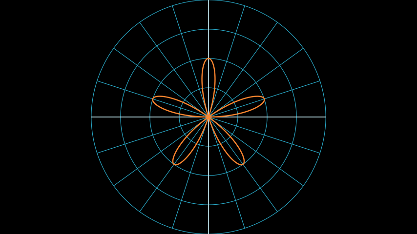from manim import * class PolarGraphExample(Scene): def construct(self): plane = PolarPlane() r = lambda theta: 2 * np.sin(theta * 5) graph = plane.plot_polar_graph(r, [0, 2 * PI], color=ORANGE) self.add(plane, graph)
References:
PolarPlane
- point_to_polar(point)[源代码]#
Gets polar coordinates from a point.
- 参数
point (numpy.ndarray) – The point.
- 返回
The coordinate radius (\(r\)) and the coordinate azimuth (\(\theta\)).
- 返回类型
Tuple[
float,float]
- polar_to_point(radius, azimuth)[源代码]#
Gets a point from polar coordinates.
- 参数
radius (float) – The coordinate radius (\(r\)).
azimuth (float) – The coordinate azimuth (\(\theta\)).
- 返回
The point.
- 返回类型
numpy.ndarray
实际案例
Example: PolarToPointExample ¶
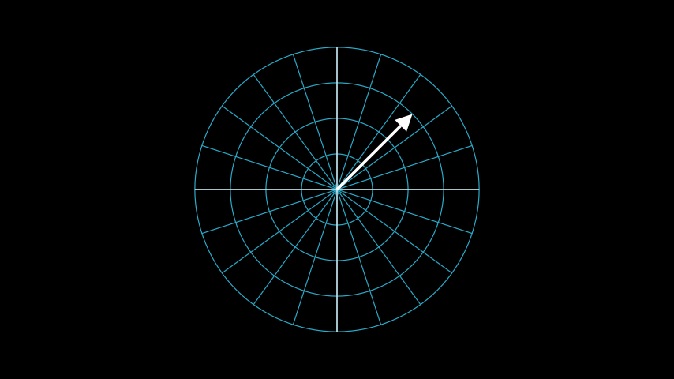from manim import * class PolarToPointExample(Scene): def construct(self): polarplane_pi = PolarPlane(azimuth_units="PI radians", size=6) polartopoint_vector = Vector(polarplane_pi.polar_to_point(3, PI/4)) self.add(polarplane_pi) self.add(polartopoint_vector)
References:
PolarPlaneVector
- pr2pt(radius, azimuth)[源代码]#
Abbreviation for
polar_to_point()- 参数
radius (float) –
azimuth (float) –
- 返回类型
numpy.ndarray
- pt2pr(point)[源代码]#
Abbreviation for
point_to_polar()- 参数
point (numpy.ndarray) –
- 返回类型
tuple
- slope_of_tangent(x, graph, **kwargs)[源代码]#
Returns the slope of the tangent to the plotted curve at a particular x-value.
- 参数
x (float) – The x-value at which the tangent must touch the curve.
graph (manim.mobject.graphing.functions.ParametricFunction) – The
ParametricFunctionfor which to calculate the tangent.
- 返回
The slope of the tangent with the x axis.
- 返回类型
float
实际案例
ax = Axes() curve = ax.plot(lambda x: x ** 2) ax.slope_of_tangent(x=-2, graph=curve) # -3.5000000259052038